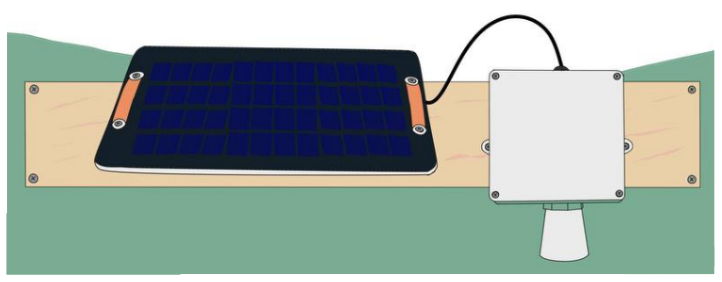
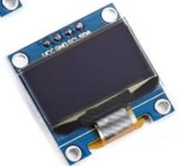

Mesh Water Level
A solar-powered ultrasonic sensor that measures the distance down to a water surface, radios it over a MeshCore LoRa link to a WiFi gateway, and logs it to Bayou. This page lists every part, where to buy it, and how it's wired.
How it fits together
Two devices, one link each. The sender sits in a weatherproof box over the water, reads the ultrasonic sensor on a timer, and transmits a short LoRa message with the distance and its battery voltage. The receiver sits indoors within WiFi range (a LoRa link can span a few hundred metres to a few kilometres depending on terrain and antennas), acknowledges each reading, and posts it to a Bayou feed as distance_meters and battery_volts.

Parts & where to get them
Prices are approximate (USD, 2026) and shown only for budgeting. Where a part is generic, the spec that matters is listed instead of a single product, so you can buy from whichever supplier ships to you.
Sensor node (sender)
1 per monitoring site| Part | What it does | Where to get it | Qty | Approx. |
|---|---|---|---|---|
| MaxBotix MB7383HRXL-MaxSonar-WRLST, IP67, TTL serial | Ultrasonic rangefinder. Reports distance in millimetres, 0.5–10 m, about 6 readings per second. | maxbotix.comAlso sold by RobotShop and others | 1 | $110 |
| Rook v4nRF52840 pro-micro + Wio-SX1262 LoRa + OLED | The sender's microcontroller and radio. Reads the sensor over UART, shows status on its screen, transmits over MeshCore. | Assembled, bare PCB, or build it yourself — see Getting a Rook | 1 | see below |
| LoRa antenna, 915 MHze.g. Nearson S463AH-915: 2 dBi whip, RP-SMA male | Connects to the Wio-SX1262 module. Never power the radio without an antenna attached. The Wio's socket is a tiny U.FL (IPEX), so an RP-SMA antenna also needs a U.FL to RP-SMA female bulkhead pigtail, which doubles as a clean pass-through in the enclosure wall. | DigiKey — Nearson S463AH-915Pigtail: search “U.FL to RP-SMA female bulkhead” | 1 + pigtail | $10–20 |
| Li-ion / LiPo battery3.7 V single cell, 3000–10000 mAh | Runs the node overnight and through cloudy days. Must have a protection circuit and a JST-PH 2.0 mm 2-pin plug. Check the plug's polarity before connecting: vendors don't agree on which side is positive (see wiring). | Adafruit, SparkFun, or any hobby battery supplier. Search “3.7V LiPo JST-PH 10000mAh” | 1 | $10–30 |
| 5 V USB solar panel~5–6 W, USB-A output, outdoor-rated | Charges the battery through the Rook's USB-C port. Any panel with a regulated 5 V USB output will do. | Generic. Search “5V 6W USB solar panel waterproof” | 1 | $15–30 |
| USB-A to USB-C cableoutdoor length as needed | Runs from the panel into the box, through a cable gland. | Generic | 1 | $5 |
| Hook-up wire, 3 conductors22–24 AWG, or shielded 3-core cable | Sensor to Rook: signal, power, ground. Keep it short if you can. For longer runs, use shielded cable. | Generic, or MaxBotix's shielded cable (sold under “accessories” on the MB7383 page) | ~30 cm | $2 |
| Weatherproof junction boxIP65+, roughly 100 × 100 × 70 mm | Holds the Rook and battery. Needs room for the sensor's thread through the bottom and a gland for the solar cable. | Hardware or electrical supplier | 1 | $10–20 |
| ¾″ fitting + cable gland¾″ PVC/conduit locknut or coupling; PG7 or M12 gland | The MB7383's housing threads into standard ¾″ electrical PVC fittings. The gland seals the USB cable entry. | Hardware store | 1 each | $5 |
| Mounting board / bracket | Holds the panel and box so the sensor points straight down, clear of the dock or bank. | Local lumber, or a steel angle bracket | 1 | — |
Gateway (receiver)
1 per site, or shared by nearby sensors| Part | What it does | Where to get it | Qty | Approx. |
|---|---|---|---|---|
| Heltec WiFi LoRa 32 V3 or V4ESP32-S3 + SX1262, 863–928 MHz | Receives the LoRa messages, acknowledges them, and posts each reading to Bayou over WiFi. Its screen shows WiFi and Bayou status. Either version works: the V4 has more transmit power, the V3 is cheaper and widely stocked. | heltec.org — V3 heltec.org — V4Also Rokland, Amazon, and other resellers |
1 | $20–30 |
| LoRa antenna | Usually included with the Heltec. A better antenna placed high, by a window, increases range. The same Nearson whip works here with a U.FL to RP-SMA pigtail. | Included, or Nearson S463AH-915 | 1 | incl. |
| USB-C power supply + cable | Powers the gateway continuously. Any phone charger works. | Generic | 1 | $10 |
| Case (optional) | Heltec sells a housing kit for the V4. 3D-printed cases exist for both boards. | heltec.org — expansion kit | 1 | $5–15 |
Online services
| Service | What it does | Link |
|---|---|---|
| Bayouopen-source data store | Stores and plots the readings. Create a feed with a distance_meters field and give its keys to the gateway. |
gitlab.com/p-v-o-s/agroeco/bayou |
| Setup & flashing page | Flashes both devices from Chrome or Edge, and gives you a serial console for pairing and WiFi setup. | edgecollective.io/micro-config |
Firmware sourceexample v3-ultrasonic |
MeshCore-based firmware for both the sender and the receiver. | github.com/edgecollective/MeshCore-simple-sensor |
Getting a Rook
The Rook is an open-hardware carrier board designed by Edge Collective / PVOS. It pairs an nRF52840 “pro-micro” module with a Seeed Wio-SX1262 LoRa radio, a small OLED screen, a user button, a power switch, and a JST battery connector. There are three ways to get one.

Check the OLED's pin order before soldering. The Rook's OLED header is wired VCC · GND · SCL · SDA, left to right. The labels printed above the four pins on your display must read in that same order, as they do on this module. Many look-alike OLEDs put GND first, and plugging one of those in reverses the power and can destroy the display.
Wiring the sensor node
Only three wires go between the sensor and the Rook. The MB7383 runs freely, sending a frame like R0742 (742 mm) about six times a second at 9600 baud. The Rook listens on its RX1 pin and never talks back. Power comes in through the pro-micro's USB-C port from the solar panel. The battery plugs into the Rook's JST socket.
| MB7383 pin | Signal | Rook connection | Notes |
|---|---|---|---|
| 5 | TTL serial out | RX1 (P0.08) | 9600 baud, 8N1, frames Rdddd\r in mm |
| 6 | V+ | 3V3 | Sensor accepts 2.7–5.5 V and draws about 3 mA |
| 7 | GND | GND | Any ground pad |
| 4 | Ranging start | — | Leave floating so the sensor ranges continuously |
| 1, 2, 3 | Temp / PWM / analog | — | Not used |
About charging: the solar panel's 5 V goes into the pro-micro's USB-C port, and the pro-micro's built-in charger tops up the battery. That charger is small (about 100 mA on a nice!nano), so a bigger panel won't charge any faster. A larger battery gives you more cloudy days in reserve, not faster charging. A 10000 mAh cell is a sensible choice for winter or for shaded sites.
Mounting over the water
The sensor measures the distance down to the water, so level = (height of sensor above your datum) − distance_meters. Record the mount height once at install time. Mount the box level, so the sensor points straight down over open water.
- Drill the bottom of the box for the sensor. Thread the MB7383 through a ¾″ PVC fitting or locknut so its face points down, and seal the joint.
- Fit a cable gland in the side or bottom of the box for the solar panel's USB cable. Keep all openings facing down so rain can't run in.
- Mount the box so the sensor face is at least 0.5 m above the highest water you expect. The MB7383 reads anything closer as 50 cm. Its maximum range is 10 m.
- Face the panel toward the equator (south in the northern hemisphere), tilted up and unshaded for as much of the day as you can manage.
- Test in air first: aim the sensor at the floor from a known height and confirm the OLED reads it to within about 1 cm.
The gateway
The Heltec needs no wiring: attach its LoRa antenna, plug it into USB power, and place it indoors where it gets WiFi, as close to the sensor as you can, ideally high up by a window facing the sensor. Once configured, it reconnects to WiFi by itself after a power cut.
Firmware & setup
Everything is done from one web page in Chrome or Edge on a desktop computer: edgecollective.io/micro-config. It walks through these steps in detail.
- Flash the gateway. Plug in the Heltec and flash the
v3-ultrasonicreceiver firmware straight from the browser. - Flash the Rook (skip if it came pre-flashed). Double-tap reset, and a
NICENANOdrive appears. Drag the.uf2file onto it. - Pair them. With both powered up side by side, cycle each OLED to its Advert page with short presses, then long-press to broadcast. Each device adds the other as a contact.
- Point the sender at the gateway. In the Rook's serial console, run:
list target Receiver
- Put the gateway on WiFi from its serial console:
set wifi_ssid your-network set wifi_password your-password reboot
- Point it at your Bayou feed. Create a feed that includes a
distance_metersfield, then:set bayou_public_key ... set bayou_private_key ...
- Optional: change how often readings are sent with
set interval 300(seconds, minimum 10), and give the node a name withset name Dock-North.
To check it's working, run send on the Rook to force a reading now, and status on the gateway to see the WiFi and Bayou status and the last reading received.